私密 · 安全 · 安靜的日記本
安靜地，
寫下真實的自己
沒有帳號，沒有打卡，也沒有人在看。
你寫下的每一個字，只儲存在你的 iPhone 和你自己的 iCloud 裡。
免費下載 · iPhone · iOS 17 以上
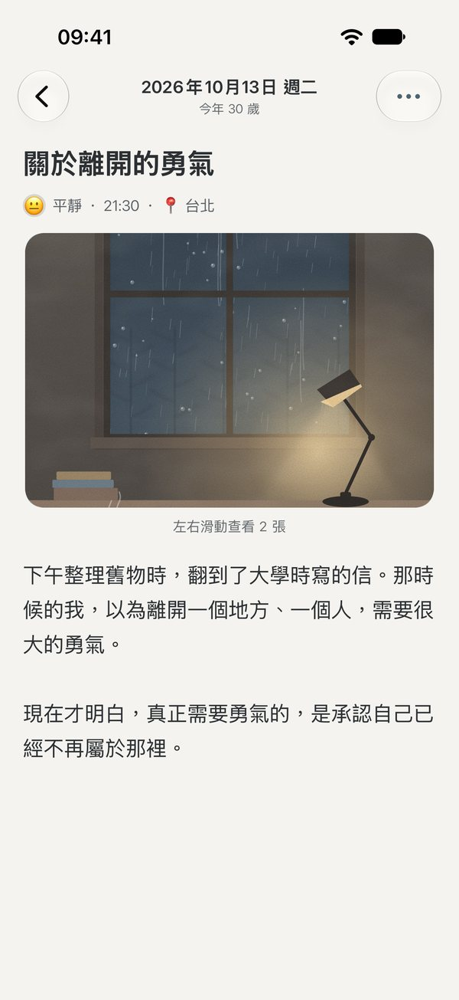
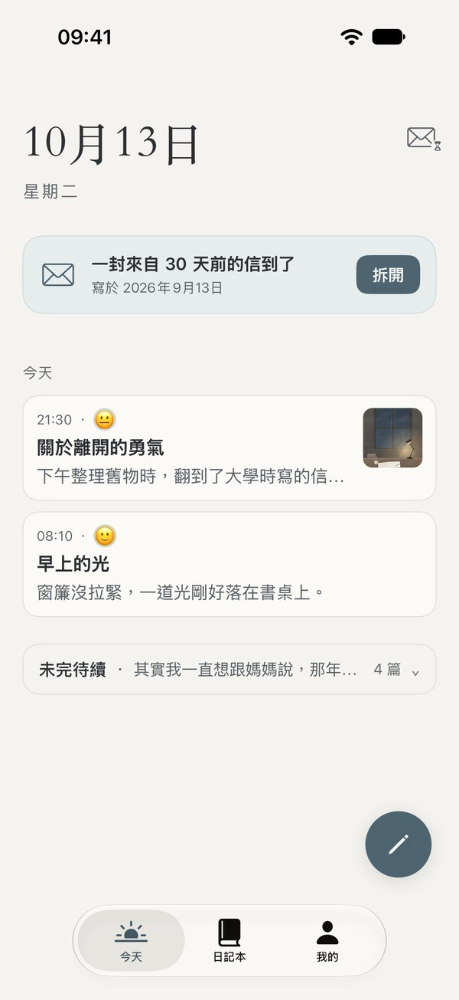
安靜地寫
打開就能寫
今天的日期、一句提示語，下面就是一頁紙。心情、照片、所在的城市，想加就加；不想加，就只寫幾句話。沒寫完也不會不見，想寫的時候再回來。
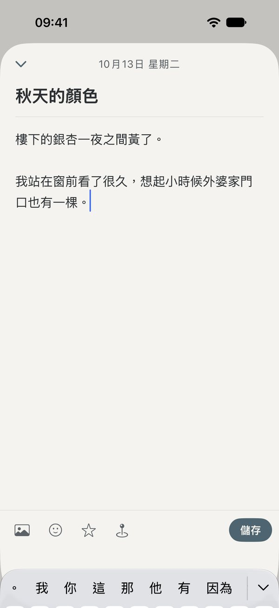
珍藏
一年，一本書
每一年的日記，自動收成一本書。改個書名，換一張封面，選一種喜歡的紙。幾年以後，書架上就是你走過的日子。
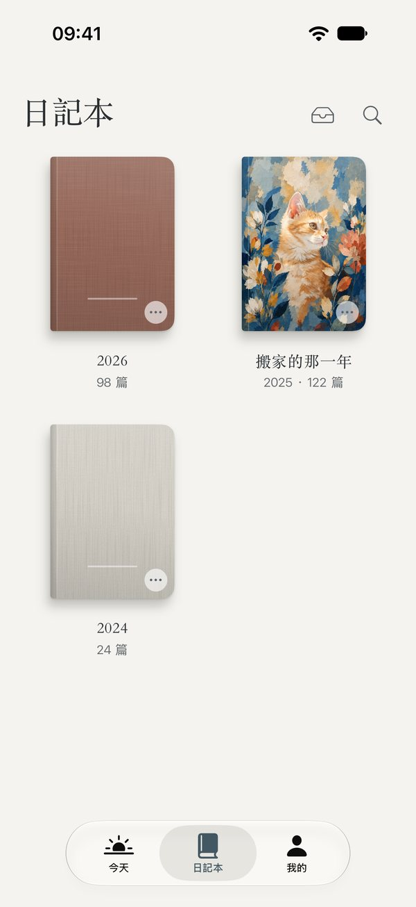
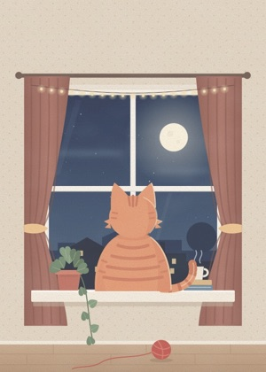
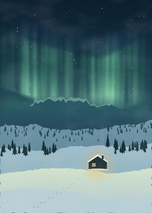
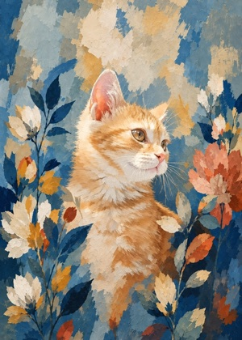
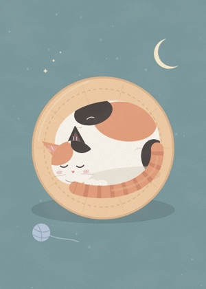
每一年，都可以換一張喜歡的封面
回顧
翻回某一天
沿著時間軸一篇一篇往下讀，或者在全年日曆上點開某一天。想找哪一篇，搜尋一下就到。
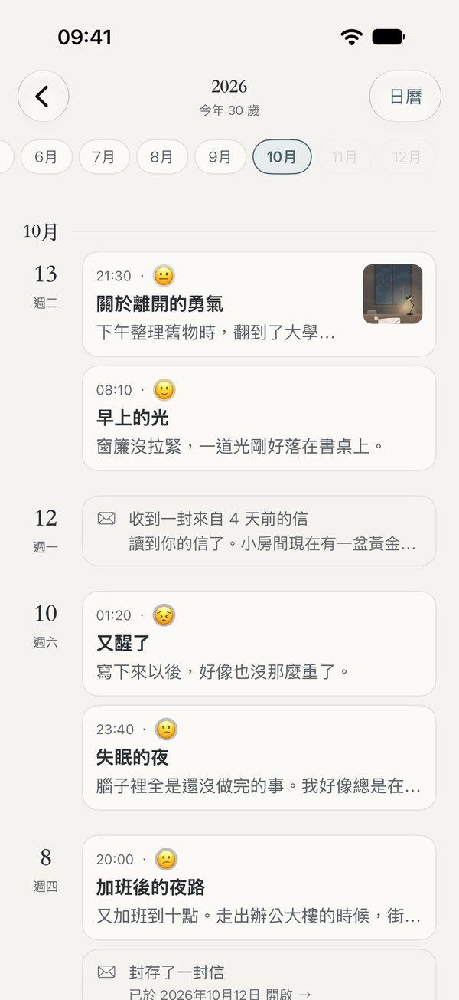
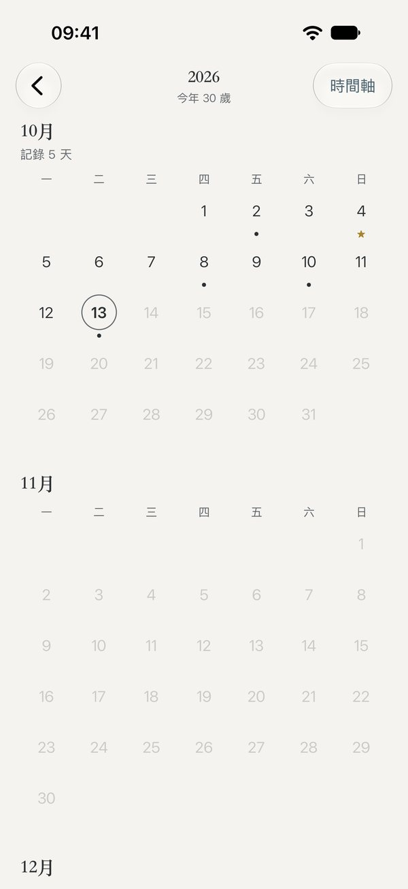
時間膠囊
寫給未來的自己
給未來的自己寫一封信，選好哪一天打開。在那之前，信一直封著，誰也看不到；到了那一天，會輕輕提醒你。讀完，還可以回一封，寫給更遠的未來。
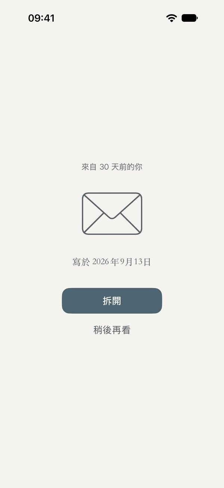
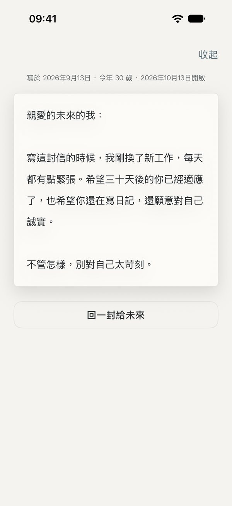
安全、私密
只屬於你
App 鎖、日記本鎖、信箱鎖，用 Face ID 或數字密碼解開。
切到背景時自動蓋住螢幕，多工處理畫面裡看不到你的日記。
日記只在你的 iPhone 和你自己的 iCloud 裡，我們看不到任何內容。
不使用任何廣告、分析和追蹤工具，不記錄你在 App 裡做了什麼。
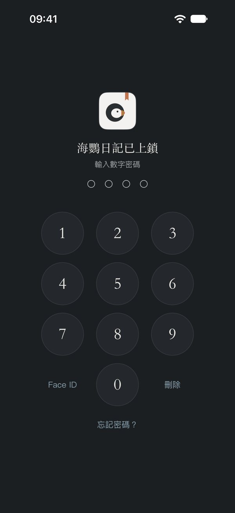
隨時可以帶走
日記永遠是你的
公開的通用格式（.zip），換手機、換 App 都能完整回復。
每一篇匯出成文字檔，任何地方都能打開。
排成一本書的樣子，可以列印成冊。
從別處搬過來也很簡單：支援 Markdown、文字檔和常見日記 App 的匯出檔案。
我們的承諾
- 我們看不到你的日記沒有帳號，沒有伺服器
- 不放廣告，不賣資料也不追蹤你在 App 裡做了什麼
- 日記永遠是你的隨時可以完整帶走
- 不催促，不打卡隔了很久再回來，它還在